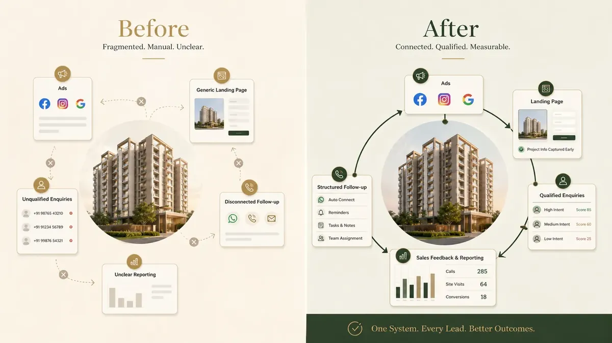
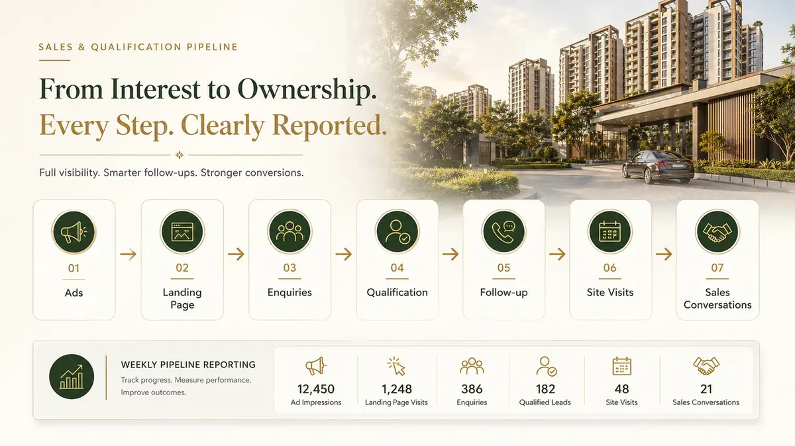

For regional residential developers
Adscade connects your ads, landing pages, qualification, follow-up and sales feedback into one managed acquisition system — so more of the enquiries you already pay for become qualified buyer conversations.
5 quick details, then choose a time.
The leak
Every stage is a place your money quietly goes missing — and none of it reaches your ad account, which only ever reports the click. We rebuild all four as one system and report on each of them weekly.
Illustrative funnel
Example shown for illustration. Actual outcomes vary by project, price, market, media budget, follow-up and sales process.
The difference
Scattered marketing
Ads and funnel handled separately
Generic landing experience
Every form submission treated equally
Sales outcomes remain disconnected
Optimisation based on top-level lead volume
The Adscade system
Campaign and funnel planned together
Message-matched landing journey
Qualification built into the funnel
Sales-stage feedback connected
Optimisation informed by enquiry quality

Adscade builds and manages four things, as one system:
And it is live inside a week:
Reporting
One concise view of spend, enquiries, qualification, calls, site visits and follow-up — so marketing and sales are working from the same information.
Sample reporting view
Figures shown are illustrative. Available reporting depends on the sales stages and outcome data maintained by the client's team.

Qualification before volume
Budget, location, property type and buying timeline are defined with your team. Campaigns, landing pages and follow-up are then evaluated against that standard — not merely the number of forms submitted.
Qualification criteria, reporting responsibilities and the initial optimisation scope are documented during onboarding. Media costs are billed to you directly by the platform. Outcomes vary by project, price, market, media budget, follow-up and sales process.
Next step
Five quick details — enough for us to look at your setup properly before we speak.
Prefer to message instead? WhatsApp us on +91 70196 98301.
Common questions
Regional residential developers with an actively marketed project, inventory to sell over the next six to twelve months, and a sales team or structured follow-up already in place. It also suits exclusive mandate holders and channel-partner firms with direct control over a project's marketing.
Four things, run as one system: offer and messaging, campaign management, the landing page and qualification, and tracking, reporting and optimisation. Nothing is subcontracted to someone who has never seen the rest of your funnel. Running ads without the rest of it is pouring water into a leaking bucket.
No. Many developers come from portal enquiries or channel partners only. The landing page, video creative and follow-up sequence are built for your project rather than adapted from something you already have. If you do have an existing account, we work inside it so the history stays with you.
Media budget sits separately from our fee and is paid by you directly to the platform. The right level depends on your city, price point and how much inventory you are moving. Most projects of this type are working with a meaningful monthly commitment rather than a trial amount — we will be specific on the call.
The build runs about a week once onboarding is complete — strategy agreed, campaigns built, landing page and qualification live, tracking connected. Delays in project details, account access or creative approvals extend it. After launch there is an optimisation period while the campaigns find the right audience.
Your sales team does. Adscade builds the automated first response and the qualification that reaches them, so the enquiry arrives with budget, location and timeline already on record. We do not sell on your behalf or take over your buyer relationships.
After you submit the five project details, you are taken directly to Calendly to choose an available time. Your name and email are carried forward, so you do not need to enter them again. Before the call, we review the information you submitted so the conversation can focus on your project and acquisition setup.
Tell us about your project